Blackjack
ブラウザで遊べるブラックジャックゲーム
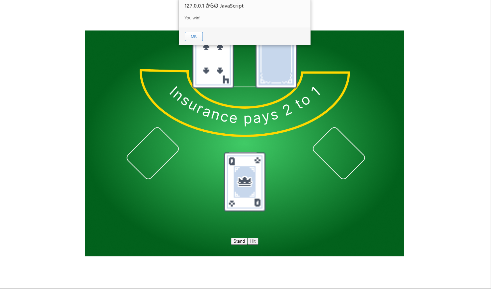使用技術
- Typescript
- React
- vite
Tetris
ブラウザで遊べるテトリスゲーム
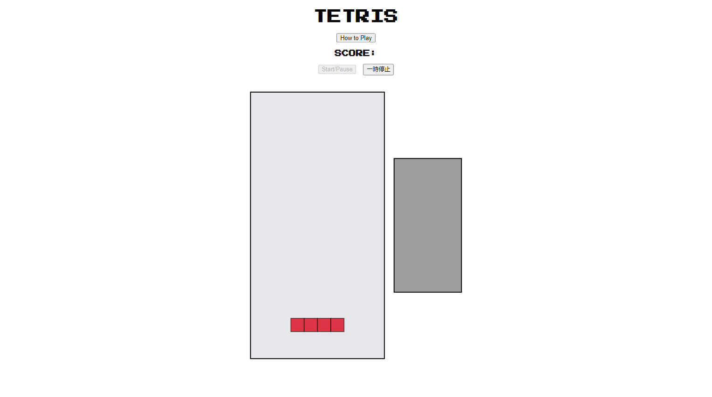使用技術
- HTML
- CSS
- JavaScript
Battery Finder Program
ブラウザで使う、カメラに最適な電池を提案するプログラム。
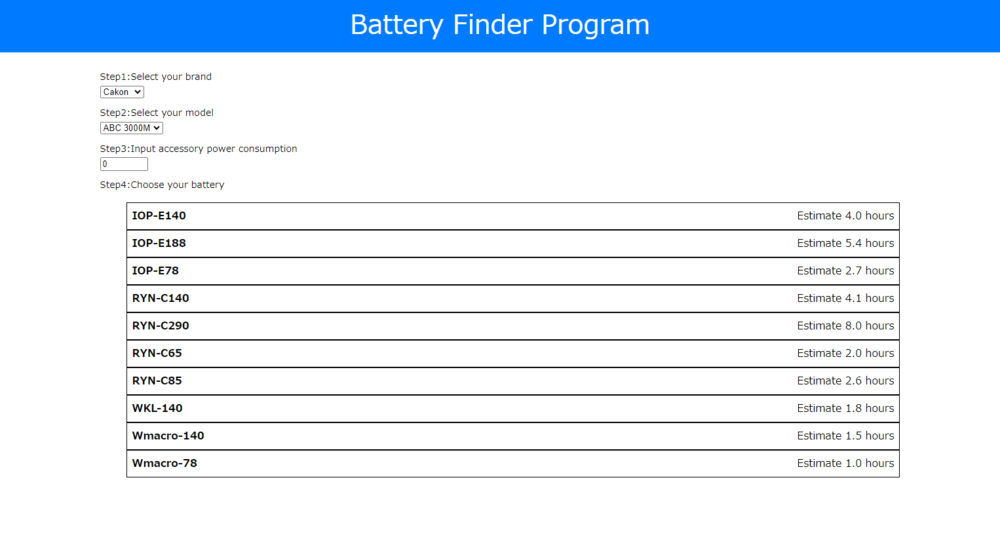使用技術
- HTML
- CSS
- JavaScript
Build Your Own Computer
ブラウザで使うコンピュータシュミレーション
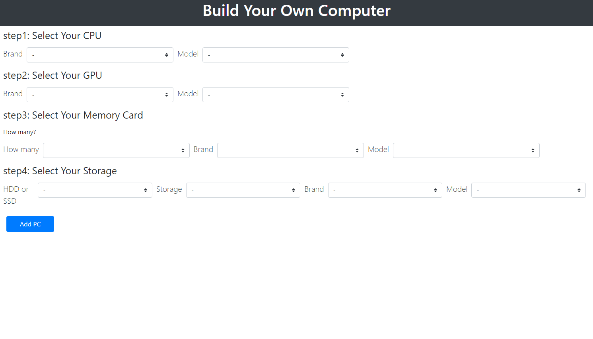使用技術
- HTML
- CSS
- JavaScript
Resume-Website
履歴書とポートフォリオの静的ウェブサイト
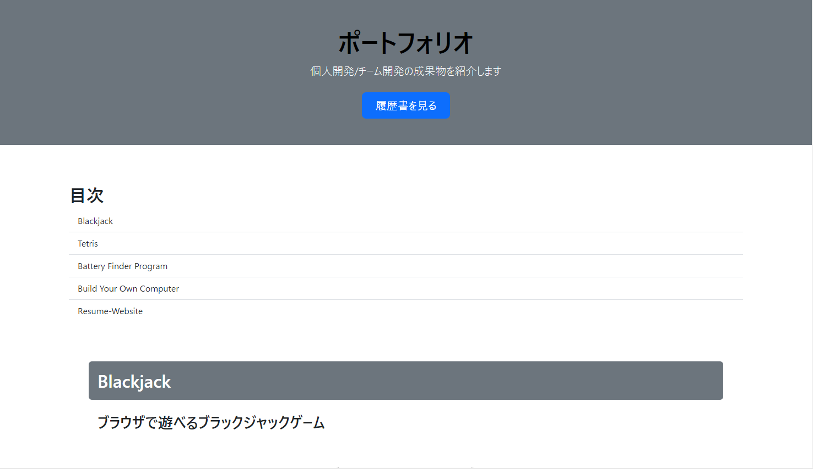使用技術
- HTML
- CSS
- BootStrap
Guess-the-number-game
数字を入力して推測するゲーム
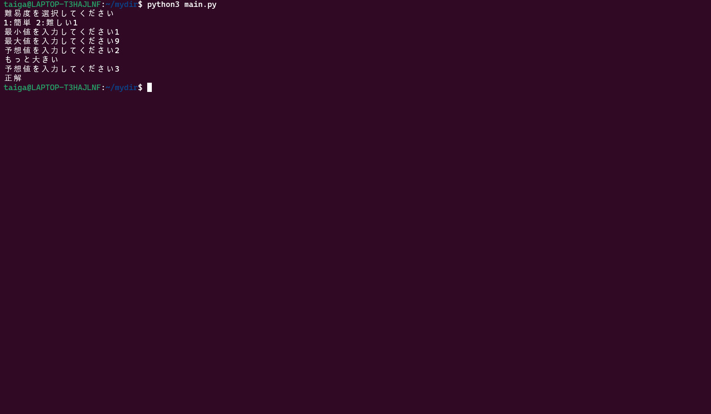使用技術
- Python
説明
Guess-the-number-gameは、数字を入力して推測するゲームです。 ユーザーに2つの数字を入力してもらい、その数字の範囲内で乱数を生成します。 ユーザーは生成された数字を推測し、ヒントをもとに正解に近づけていきます。 このプロジェクトは、一人ですべての開発を行いました。 このプロジェクトでは、UbuntuとPythonが利用できる環境の構築とPythonの基本を理解し アウトプットすることができました。 また、オブジェクト指向を学ぶためにクラスを用いて実装することを心がけました。
Markdown-to-HTML-Converter
MarkdownからHTMLへ変換するアプリケーション
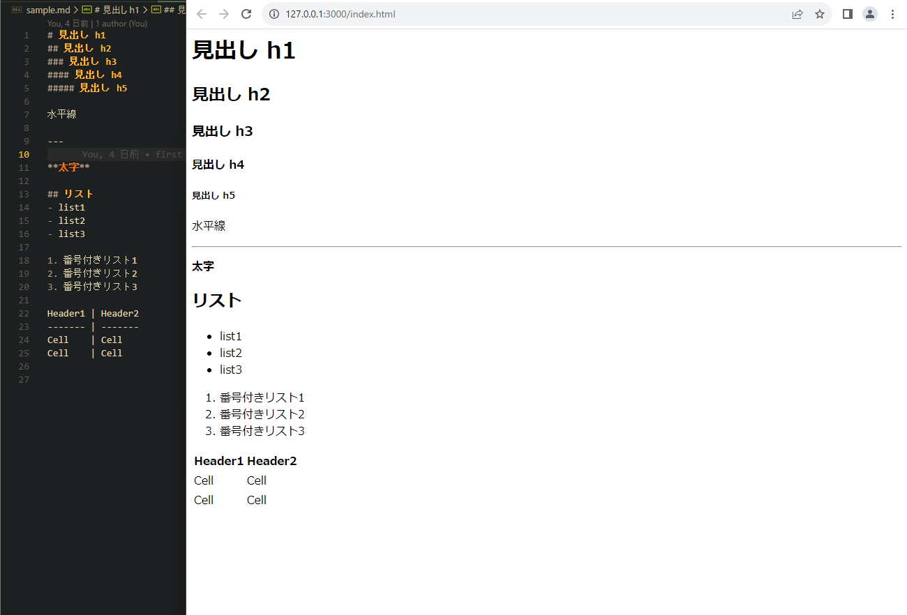使用技術
- Python
説明
Markdown-to-HTML-Converterは、MarkdownからHTMLへ変換するアプリケーションです。 ユーザーは、マークダウンファイル(.md)を作成しこのアプリケーションを利用することで HTML版のファイルをダウンロードできます。 このプロジェクトは、一人ですべての開発を行いました。 CLI上でコマンドを入力する必要があります。 このプロジェクトでは、Pythonを利用しファイルの読み書きや初めて利用するmarkdownライブラリの機能について学べました。
File-Manipulator-Program
CLI上で実行できるコマンドとその機能を提供するスクリプト
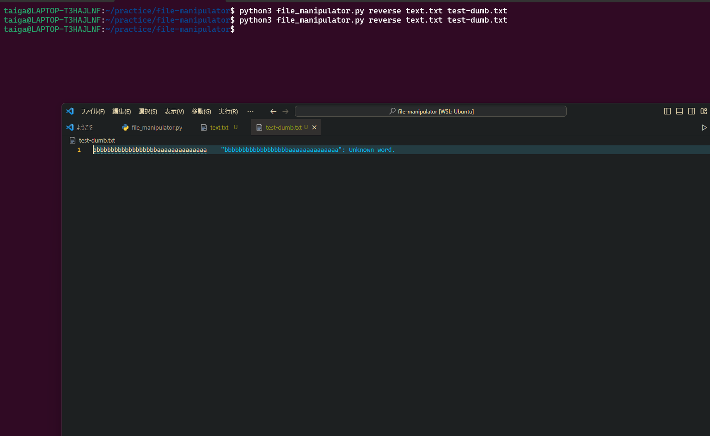使用技術
- Python
説明
File-Manipulator-Programは、CLI上で実行できるコマンドとその機能を提供するスクリプトです。 このプロジェクトは、一人ですべての開発を行いました。 CLI上でコマンドを入力する必要がありますが、このコマンドを引数として受け取りPythonで処理しています。 Pythonの組み込み関数を使用することで実装を容易にしています。 このプロジェクトでは、ユーザーに提供できるサービスを作成する体験が得られました。
地元探検×プレスリリース
地図上でプレスリリースを確認できるアプリ
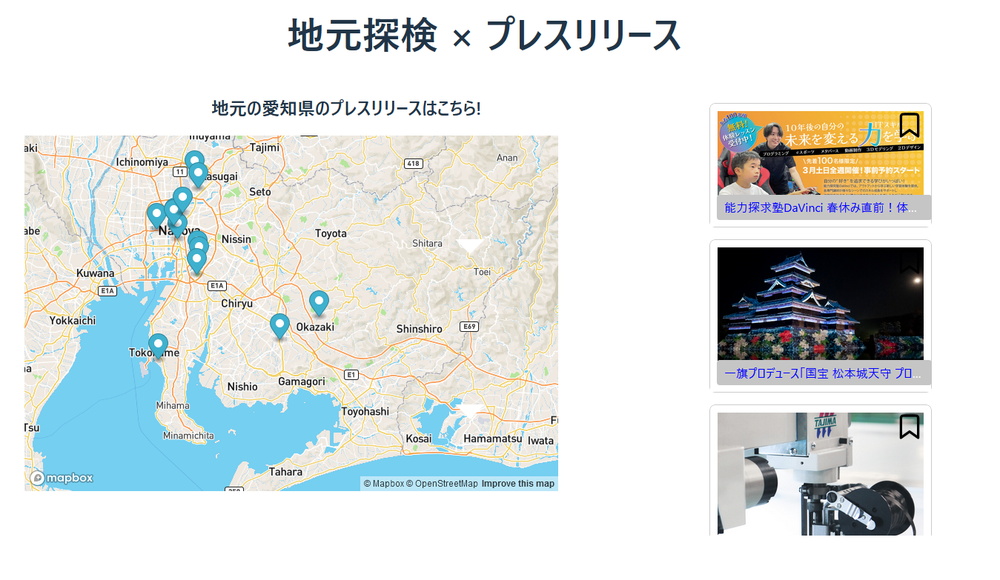使用技術
- React
- MapBoxAPI
説明
地元探検×プレスリリースは、地図上でプレスリリースを確認できるアプリです。 このプロジェクトは3日間のハッカソンで開発しました。3人体制のチームで作成しました。 APIトークンを安全に使用するために、ViteのSecret機能を使いました。
犬検索API
犬検索APIを使用した犬検索アプリ

使用技術
- HTML
- CSS
- JavaScript
- Go
Local-Chat-Messenger
TCP/IP通信を用いた、クライアントとサーバーの簡易的なデータ送受信アプリケーション
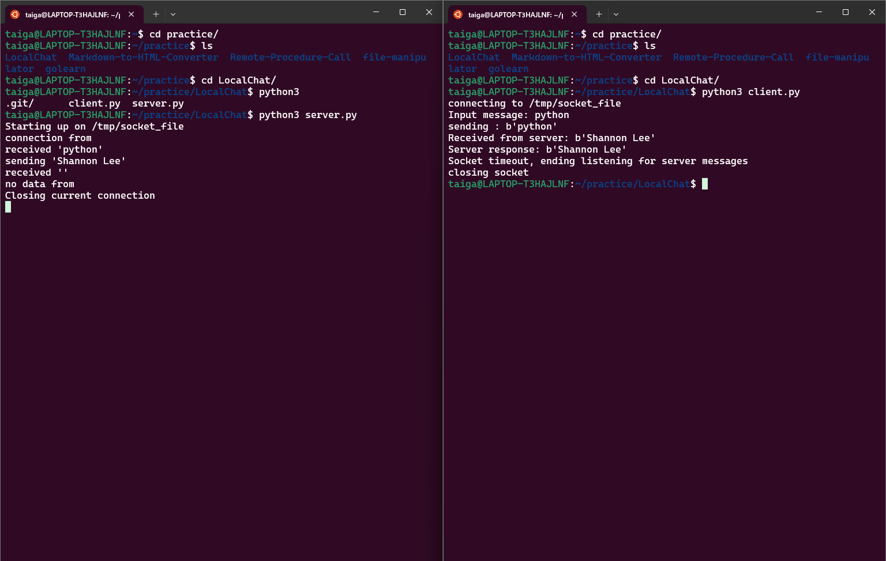使用技術
- Python
説明
Local-Chat-Messengerは、クライアントとサーバーの簡易的なデータ送受信アプリケーションです。このプロジェクトでは、TCP/IP通信を用いたネットワーク通信についての基礎を学ぶことに役立ちました。
Remote-Procedure-Call
クライアントとサーバー間で異なる言語で、クライアントがサーバのプログラムを呼び出すアプリケーション
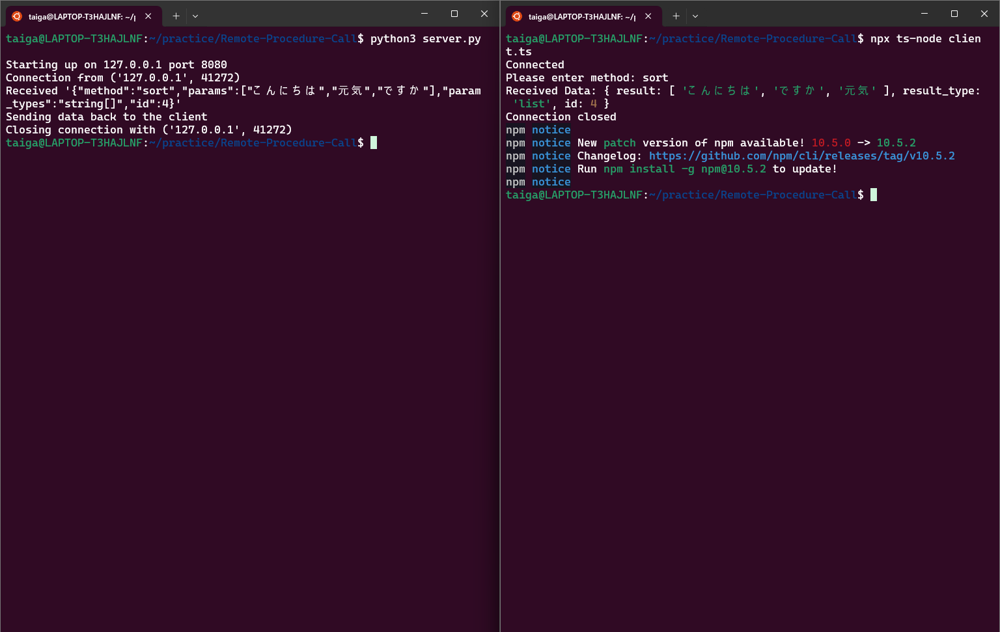使用技術
- Python
- TypeScript
説明
Remote-Procedure-Callは、クライアント(TypeScript)とサーバー(Python)間で異なる言語で、クライアントがサーバのプログラムを呼び出すアプリケーションです。リクエストとレスポンスはJson形式で通信しました。 コードを管理しやすくするために、オブジェクト指向の原則に従い、ソケットの作成とリクエストとプログラムの判定でクラスを分けています。このプロジェクトでは異なる言語間での通信を学ぶことに役立ちました。また、 オブジェクト指向についてのアウトプットを行うことで、コードの管理や拡張性について学ぶことに役立ちました。
音楽投稿サイト
チャット機能やフォロー機能を備えた音楽投稿サイト
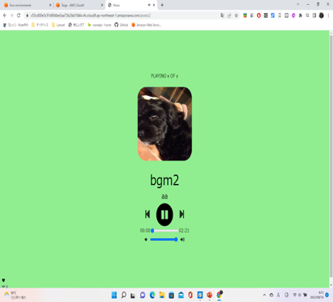使用技術
- Laravel
- MySQL
- howler.js
- AWS S3
- Pusher
- Bootstrap
説明
Remote-Procedure-Callは、クライアント(TypeScript)とサーバー(Python)間で異なる言語で、クライアントがサーバのプログラムを呼び出すアプリケーションです。リクエストとレスポンスはJson形式で通信しました。 コードを管理しやすくするために、オブジェクト指向の原則に従い、ソケットの作成とリクエストとプログラムの判定でクラスを分けています。このプロジェクトでは異なる言語間での通信を学ぶことに役立ちました。また、 オブジェクト指向についてのアウトプットを行うことで、コードの管理や拡張性について学ぶことに役立ちました。